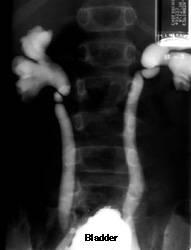

Introduction
The exploding field of diagnostic imaging has improved our understanding of the natural history of many conditions that involve the genitourinary tract. There are now multiple modalities available to image the human body in great detail, which can be use to improve the outcomes for the patients. The indications for diagnostic imaging usually depend upon the clinical presentation and the age of the patient. Frequently more than one imaging technique is required to fully evaluate the anatomy and physiology of the genitourinary (GU) tract. Technological advances in various imaging modalities mainly ultrasonographies, nuclear medicine, CT and MRI have aided in our ability to visualize and evaluate the functionality of the genitourinary tract, enabling the diagnosis of various disease processes that affect the genitourinary system. Collectively as a result of these newer imaging modalities, some of the more traditional techniques have assumed a limited role in the diagnostic evaluation of the pediatric genitourinary diseases (e.g. intravenous urography).
Imaging of the urinary tract can be broadly divided into Ionising and Non ionising radiation (no radiation) investigations. Ionising radiation investigations would include X-rays, IVU’s, CT scans and radionuclide imaging. Non ionising radiation investigations include ultrasound and magnetic resonance imaging (MRI). As the paediatric population are more susceptible to radiation induced cancers, special consideration has to be taken when choosing the most appropriate investigation. There is an increased awareness of the danger of cumulative radiation exposure in the pediatric patient especially in children with chronic health conditions that require long-term follow-up and repeated imaging. The risk of developing a lethal cancer from radiation exposure in children is theorized to be two to four times higher than for adults per dose unit. The reasons for this are thought to be due to a combination of number of factors, children have greater cell proliferation rates, especially during physiological growth spurts and are therefore much more radiosensitive than adults. Children have longer life expectancy from the time of the radiation exposure, allowing for radiation-induced chromosomal mutations to become clinically relevant.
Questions to be asked when choosing an investigation are
- Will this investigation answer the clinical question?
- Is there a previous investigation that would answer the current clinical question?
- Is there a safer/non ionising radiation alternative?
If there is any doubt, then discussion with your radiologist is advisable. Below are examples of different levels of radiation and its equivalent background radiation for comparison.
Diagnostic Procedure |
Typical effective dose (MsV) |
Equivalent number of Chest X rays |
Approximate equivalent to background radiation |
X ray Abdomen/KUB |
1.0 |
50 |
6 months |
IVU |
2.5 |
125 |
14 months |
CT Scan of the abdomen &pelvis |
10 |
500 |
4.5 years |
Radionuclide |
1.0 |
50 |
6 months |
Contrast in Imaging of the Urinary Tract
Until the early 1970s, all contrast media were hypertonic ionic compounds (HOCM). These contrast media were associated with a higher risk of contrast reactions and nephrotoxicity.
Further developments have lead to Low Osmolar Contrast Media and these are considered 5-10 safer than HOCM.
Adverse reactions from current contrast media are rare and are in the region of less than 1% of all patients. The majority of these reactions are mild and self-limiting.
Adverse reactions
Adverse reactions to Iodinated Contrast Media (Commonly used in IVU and CT scan)
Non-idiosyncratic/ Direct effect on organs
- Venous- Pain at injection site and extravasation of contrast media, thombophlebitis
- Arterial-Endothelial damage and vasodilation- Rare and usually related to HOCM
- Nephrotoxicity- Occurs in approximately 1-6% with transient rise in serum creatitnine. In some cases, dialysis is required. Risk factors would include
- Known renal dysfunction
- Dehydration
- Synergistic effect alongside other nephrotoxic drugs
- Cardiovascular toxicity- Arrythmia, increased vagal activity
Idiosyncratic Reactions/ Allergic reactions
Most reaction occurs minutes after administration of contrast media. These can range from mild allergic reactions such as hives and urticaria which in themselves rare. Fatal reactions would cause severe anayphylaxis causing cardiovascular distress and death.
Current recommendations by the British Resuscitation Council advice the prompt administration of Adrenaline in the presence of
- Acute onset of illness
- Life threatening airway, breathing or circulation problems.
- Skin changes.
• Child more than 12 years: 500 micrograms IM (0.5 mL)
• Child 6 -12 years: 300 micrograms IM (0.3 mL)
• Child less than 6 years: 150 micrograms IM (0.15 mL)
It is important to be familiar with the current guidelines.
Prophylaxis against Adverse Reaction to Iodinated Contrast Mediums
Preventing Non idiosyncratic Reactions
- Identify Patient at risk
- History and blood investigations
- Measure Serum Creatinine
- Preacautions
- Consider alternative imaging if “at risk”
- Stop renal toxic drugs
- Hydration pre and post contrast administration ( refer to local guidelines)
- Use Low Osmolar Weight Contrast Media
Preventing Idiosyncratic Reactions
- Identify patient at risk
- Previous contrast reaction
- History of atopy or allergies
- Precautions
- Consider alternative investigation
- Use Low Osmolar weight contrast media
- If previous history of contrast reaction, use different contrast agent
- Close supervision and keep drugs available
- Venous access at least 30 minutes post contrast administration
- Consider premedication with steroids to reduce risk of reaction
MRI Contrast agents
Currently, around ¼ of MRI investigations use Contrast agents. Adverse reactions are extremely rare, mostly minor and self limiting.
Reactions can be divided into acute and delayed.
Acute
- Urticaria and rash
- Nausea/Vomiting
- Dizziness and confusion
- Dyspnoea, chest discomfort and palpitation
- Anaphylactoid shock ( extremely rare)
Delayed reactions
Nephrogenic Systemic fibrosis (NSF) - Characterised by deposition of collagen with thickening and hardening of skin with contractures and involvement of other tissues. Occurs in patients with prexisting renal disease. The mechanism is unknown.
Prophylaxis against adverse reactions to MRI contrast agents
- Identify those at risk
- Previous reactions
- Atopy and allergies
- Renal abnormalities
- Consider alternative test
- Consider different contrast agent from one used previously
X ray
X rays utilize the difference in radiographic density of the various body parts to create an image or a radiograph. Traditionally these images were captured on X-ray film; however, nowadays we use the picture archiving and communication system (PACS) which is a film-less digital imaging system. The advantages of new technology are the improved resolution of the images and the ability to instantly and remotely share access to these images.
The primary indications for plain radiographic imaging in pediatric urology are to visualize any radio-opaque objects in the GU tract or in the abdomen. Other uses are to evaluate the structure of the spine, evaluate for retroperitoneal air and fat-fascial planes, for evaluation of abscess, infection, and perforation. Plain films are also used in the evaluation of the position of stents or drains.
Ultrasounds scan
Ultrasound is usually the first line of investigations in suspected renal abnormalities. It is cheap, has no radiation and readily available. The disadvantage is that it is operator dependant. Upper-tract hydronephrosis should always be reevaluated when the bladder is empty to determine the degree to which a full bladder affects the dilation. This is the only way to differentiate between primary ureterovesical junction obstruction due to secondary upper tract dilatation and primary ureterovesical junction obstruction due to a bladder cause. The average newborn kidney is approximately 4.5 cm in length. Although prenatal compensatory hypertrophy was not previously thought to occur, it has been observed in patients with solitary or multicystic dysplastic kidney, in whom the newborn contralateral kidney is larger than normal. The presence of cortical cysts and increased echogenicity, indicators of dysplasia and poor function, are useful signs when planning a pyeloplasty in a minimally functioning kidney. Nephrectomy should be considered in such patients.
Useful in
- Size and shape
- Cortico-medullary differentiation- The kidney has a cortex (the peripheral tissue) and a medulla (central to the cortex). On an ultrasound scan, the cortex should look whiter (more echogenic) than the medulla and thus, you should be able see and differentiate between these two different tissues judging by their color ( fig 1 ).
In neonates, the renal cortex is isoechoic or hyperechoic relative to the liver. In the immediate newborn period, the renal pyramids may be echogenic with transient stasis nephropathy due to Tamm-Horsfall protein. In children, the renal pyramids are hypoechoic, which allows for clear observation of the corticomedullary junction. Loss of corticomedullary differentiation is what its called when both cortex and medulla are seen as the same shade of grey and one can not see any change of colour (any change in shade of grey tones as most diagnostic images are black and white) on the border of cortex and medulla.
- Diagnosis of kidney shape variants i.e. duplex system( Fig 2 )
- Identification of kidney lesions
- Diagnosis of hydronephrosis (Fig 3).
- Screening of genetic conditions such as Beckwith-Wiedemann as there is a risk of developing renal tumours (fig 4).
- Renal blood flow
- May or may not see renal calculi. Poor at looking for renal scarring.
- Bladder views (both prevoid and postvoid) should be included when evaluating the kidneys in children.
Fig 1: Right kidney shows the differentiation between the cortex and medulla.
Fig 2: Duplex collecting system with dilatation of both upper and lower moiety.
Fig 3: Dilated left collecting system with the characteristic Mickey Mouse appearance suggestive of PU junction obstruction.
Fig 4: Mass left kidney.
Technique
- Full bladder.
- Those with catheter should have it clamped
- Bladder scanned first before remainder of abdomen to prevent early emptying of the bladder.
Micturating cystourethrogram
MCUG is a specialized radiology procedure that has an important role in the evaluation of the lower urinary tract in children. The incidence of diseases or disorders of the urinary tract of children is high and the ultrasound examination is not always clear. Micturating cystourethrography (MCUG) procedure is a radiographic and fluoroscopic study of the lower urinary tract. It requires aseptic bladder catheterization, a small feeding tube (8F for newborns, 10F for infants) is passed via the urethra into the bladder. Contrast material is then instilled under fluoroscopic observation under gravity. Serial radiographs of the pelvis and abdomen are then taken. The first film obtained is important for the diagnosis of ureterocele. It is observed as a round filling defect at this point but may be compressed with further filling. The bladder is then filled until the expected capacity is reached. Tapping on the bladder or gentle massaging it is sometimes necessary to encourage the patient to void. Views of the kidneys and an oblique view of the male urethra are obtained once voiding has started. Ensuring that this is a voiding study is important because 20% of reflux occurs only upon voiding. Intrarenal reflux or reflux into compound papillae typically occurs at the poles of the kidney, which is a reason why the poles are more susceptible to infection and scarring.
Indications
- Vesicoureteric reflux
- Studying the urethra during micturation
- Bladder abnormalities
Contraindications
- Acute urinary tract infection
- Previous contrast reaction
Patient preparation
- Patient should micturate prior to investigation.
- Antibiotic cover of -Trimethoprim 2mg/kg/dose once daily for 3 days prior to investigation
Complications
- Contrast related reactions
- Urinary tract infection
- Bladder over distension and rupture
- Catheter trauma
Findings ( Figure 5 a)
Grade I – reflux into non-dilated ureter
Grade II – reflux into the renal pelvis and calyces without dilatation
Grade III – mild/moderate dilatation of the ureter, renal pelvis and calyces with minimal blunting of the fornices ( Fig 5b )
Grade IV – dilation of the renal pelvis and calyces with moderate ureteral tortuosity
Grade V – gross dilatation of the ureter, pelvis and calyces; ureteral tortuosity; loss of papillary impressions
Figure 5a Radiological Grading of Veiscoureteric reflux.
Fig 5b: Grade 3 reflux; note the blunting of the fornices.

Radionuclide studies
DMSA/ Static renal scintigraphy
Dimercaptosuccinic acid (DMSA) is bound the cortex of the kidney after injection, revealing relative renal function. Intravenous urography enables visualizing of collecting system, and together with ultrasound provides some information on kidney morphology, quantitative data on kidney function are missing. Tc-99m dimercaptosuccinic acid (DMSA) scintigraphy has been considered the investigation of choice in the assessment of parenchymal damage due to acute or chronic pyelonephritis and provides data on differential kidney function. A bladder catheter is not required for the DMSA scan, since it is not excreted into the urine. Limitations of DMSA are the occasional need for sedation in young children in order to obtain high-quality images. DMSA provides no information about the collecting system and urodynamics.
DMSA is used to assess relative renal function and scarring.
Indications
- Assess renal function
- Investigation of renal tract infection
- Renal congenital anomalies i.e. horseshoe kidneys
- Renal scarring and renal lesions. (Fig 6)
Contraindications
Technique
- DMSA (Dimercatosuccinic aced) is bound to plasma proteins and cleared by tubular absorption. Retained by renal cortex.
- No patient preparation
- DMSA injected intravenously and images obtained by a Gamma camera 1-6 hours later.
Information gathered
- Relative renal function
- Absolute uptake
Fig 6: DMSA scan in a case of duplex collecting system on the right side. Significant scarring and reduced function involving the lower moiety with a non functional upper moiety.
MAG -3 Scan/Dynamic renal scintigraphy
Dynamic scintigraphy with MAG3 gives an insight into kidney function and morphology. The initial part of the study, the parenchymal phase, reflects the distribution of functional parenchyma, allowing the detection of reversible or irreversible lesions. The possibility of visualizing the collecting system and urodynamics with MAG3, significantly improved quality of evaluation of kidney parenchyma. The relative function is assessed by the uptake of radionuclide 2-3 minutes postinjection. High-volume early reflux can cause erroneous readings, so an indwelling catheter should be placed prior to initiating the study. Relative function is observed by drawing a region of interest around each kidney and comparing the region with a background area. Significant errors are possible if the region of interest is drawn around the liver or spleen. The rate of excretion is measured by following the washout of radionuclide through the UPJ after the pelvis has been filled. Lasix is given to cause diuresis. Washout curves are generated, and a t½ (time for one-half of the isotope to wash out) of less than 10 minutes represents no obstruction, whereas a t½ of longer than 20 minutes indicates obstruction, and times between 10 and 20 minutes are indeterminate. Conditions that complicate interpretation of the Lasix washout curve include a megaureter or pelvis that accepts a large bolus of urine and poor renal function. In the first situation, determining when the renal pelvis is full is difficult. In the second situation, the timing of the Lasix administration is prolonged.
Indications
- Obstructed vs Non obstructed system
- Renal artery stenosis
- Reflux disease
- Renal trauma
Contraindications
Technique
- MAG-3 (Mercaptoacetyletriglycerine) is highly plasma protein bound so it is cleared by tubular secretion.
- Patient should be well hydrated and bladder emptied prior to study to overcome the problem of poor renal function or relative hypovolemia in a patient who has been fasting.
Information gathered
- Kidney time activity
- Relative kidney function
- Perfusion index
- Parenchyma and whole kidney transit times.
Fig 7: A case of left PU junction obstruction, with increasing accumulation of the radioactive isotope over time suggestive of an obstructed system.
Use of Ultrasound, MCUG and Nuclear medicine studies in the Investigation of Urinary tract infections in children according to NICE guidelines.
IVU
IVU is a functional study that depends on contrast uptake by the renal parenchyma and excretion to show the collecting system. Cross-sectional imaging has decreased the use of intravenous urography (IVU) in the pediatric population. Ultrasonography can initially reveal most of the anatomic detail necessary for management decisions, without the use of radiation or the risk of intravenous contrast.
Although it is going out of vogue in developed nations, IVU’s are useful for
- Evaluation of ectopic ureter or megaureters that are dilated to the level of the bladder
- Evaluating the anatomy of calyeceal system for planning of PCNL (Fig 8 a, b)
Fig 8 a, b: Plain film shows multiple calculi in the right kidney. IVU helps as a road map to identify the involved calyx and to plan for the best approach into the collecting system.
Technique
Contraindications
- Renal failure
- Previous contrast reactions
Contrast medium- Low Osmolar Contrast material
Paediatric Dose- 1ml /kg
Venous access required
Films
- Preliminary film- Full length anterior posterior of abdomen. The initial scout film of IVU reveals radio-opaque stones and the bowel gas pattern.
- Intermediate film- 10-14 seconds after injection to show a nephrogram/renal parenchyma. The nephrography phase of IVU reveals contrast uptake, whereas the excretion phase shows the collecting system.
- 5 min film- Determine is excretion symmetrical
- 10 min film- AP of renal areas to show calyces
- Post micturation film- to assess bladder emptying and return of collecting systems to normal sizes.
Assessment:
IVU is most helpful after age 6 months because the concentrating ability of the renal tubules improves by this age. The kidneys are assessed and compared for
- Regular appearance
- smooth outlines
- size, position
- equal filtration and flow.
The ureters are assessed and compared for size
- a smooth regular and symmetrical appearance
- A 'standing column' is suggestive of a partial obstruction.
The bladder is assessed
- regular smooth appearance
- complete voiding.
CT scan
CT scanning is mainly used in children for evaluation of blunt abdominal trauma, and the diagnosis and follow-up of renal and ureteral calculi. Children are more susceptible to the long-term effects of radiation, hence the use of ultrasonography and plain radiography should be the first line of imaging in a suspected case of renal and ureteral calculi. CT to be considered if initial findings are negative and clinical symptoms persist, however concerns remain regarding the relatively high radiation levels in CT scanning.
CT scans are excellent for
- Characterisation of lesions
- Diagnosis or renal tract calculi
- Anatomy characterisation and organ relationship to lesions i.e. Wilm’s tumour, neuroblastoma (Fig 9 a,b)
- Staging of diseases/malignancy
The disadvantages of CT scans are the radiation exposure, cost and availability.
Techniques
CT of kidney, Ureters and bladder (Unenhanced scan)
- Characterise urinary tract calculi
- No contrast media used
- More sensitive than ultrasound to confirm renal calculi
CT urogram (Triple phase scan)
- Combination
- Unenhanced scan(see above),
- nephrogenic phase- to assess renal parenchyma
- Delayed phase- to asses excretion
Staging CT
- Used as part of a workup to stage malignancy or follow up post treatment.
CT of thorax performed in conjunction with CT scan of abdomen
CT angiography
- Used to investigate renal vasculature
- Renal artery stenosis
- Arteriovenous malformations
- Characterise vascular anatomy for preoperative planning
- Renal vein thrombosis or IVC tumour
Fig 9a,b: Large mass involving the right kidney with multiple pulmonary metastatic deposits.
MRI
The role of MRI is increasing as it is has no radiation and is non invasive. It is now a serious contender to conventional intravenous urography and CT. Limitations would include availability and resources. Children may also need to be anaesthetised for a scan. The use of magnetic resonance urography (MRU) is increasing in children. The benefits of MRU are that both anatomic and functional information can be obtained from one study. MRU correlates well with Lasix renal scanning in terms of assessing renal function and may be superior in terms of distinguishing nonobstructive hydronephrosis from obstructive hydronephrosis. MRU is currently limited by the need for sedation, cost, and the need for specialized protocols, but it may become widely used in the future. The other area in which MRI gives superior anatomic information compared with ultrasonography is in fetal diagnosis
- MRI is uses specifically in the paediatric population for
- Staging of cancers
- Suspected renal mass
- Screening of patients with Von Hippel-Lindau disease
- Suspected renal tract obstruction
- MR urography
- Two common techniques
- Fluid filled urography using heavily weighted T2 MRI techniques
- Extretory MR urography using T1 weighted contrast enhanced scans.
- Indications
- To demonstrate collecting system
- Determine level of obstruction in renal tracts (Intrinsic and extrinsic)
- Congenital anomolies
- Potential transplant donor
- MR Renal angiography – as an alternative to conventional angiography and CT angiography
Intervention in Paediatric Urology
Interventional procedures are becoming commonplace and is integral in the management of paediatric urological conditions.
- Drainage of urinary tracts secondary to obstruction/Nephrostomies
- Should be reserved for patients where retrograde drainage approach is not possible
- Pre procedural preparation would include assessing risk of bleeding and infection
- Antibiotic cover
- Access to renal collection system either via ultrasound, fluroscopy or CT guidance.
- Complications
- Haemorrhage
- Sepsis
- Organ injury
- Thoracic injury i.e. pneumothorax
- PCNL- Percutaneous Nephrolithotomy
- Reserved for patients who are not candidates for ureterscopy or shock wave lithotripsy
- 2 step procedure
- Access to collecting system by radiologist using ultrasound/fluruoscopy
- Removal of stone by urologist
- Ureteric stenting
- Ureteric dilatation secondary to stricture
- Biopsy of renal tumours
- Embolisation of renal tumours or renal haemorrhage
Bibliography
- A Guide to Radiological Procedure by Chapman and Nakielny
- New Techniques in Urolradiology by Sameh K Morcos and Richard H Cohan
- Emergency Treatment of Anaphylactic Reaction by Resuscitation Council (UK)
- Pollack HM, ed. Clinical Urography. Philadelphia, Pa: WB Saunders and Co; 2000.
- Fotter, R. Pediatric Uroradiology. Berlin: Springer; 2001.
- Urinary Tract Infection in Children: Diagnosis, Treatment and Long Term Management August 2007, National Institute of Clinical Excellence.
- Primer of Diagnostic Imaging by Ralph Weissledder, Jack Wittenberg and Mukesh G Harisinghani.
- Carty H. Imaging Children. Edinburgh: Elsevier; 2005.
- de Bruyn, R. Pediatric Ultrasound: How, Why, and When. Edinburgh: Elsevier; 2005.
Swischuk, LE. Imaging of the Newborn, Infant, and Young Child. Baltimore, Md: Lippincott, Williams & Wilkins; 2004.